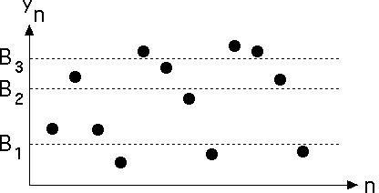

| Another method of converting the measured data
y1, y2, ..., yN
into a symbol string
i1, i2, ..., iN
is to select the bin boundaries B1, B2, and
B3 so |
| one quarter of the yk satisfy yk ≤ B1, |
| one quarter of the yk satisfy B1 < yk ≤ B2, |
| one quarter of the yk satisfy B2 < yk ≤ B3, and |
| one quarter of the yk satisfy B3 < yk. |
|
| For example, |
|  |
| Because each bin contains the same number of points, this is called an
equal-weight binning. |
| One way to produce an equal-weight binning is to sort the list of yk in
increasing order. Then take |
| B3 the element one-quarters of the way from the top of the sorted list, |
| B2 the element of one-half of the way from the
top of the sorted list, and |
| B1 to be the element three-quarter
of the way from the top of the sorted list. |
|
| Equal-weight bins can be called a maximum entropy partition. |
| Here is a time series generated by the logistic map, and the driven IFS produced using
equal-weight bins. |